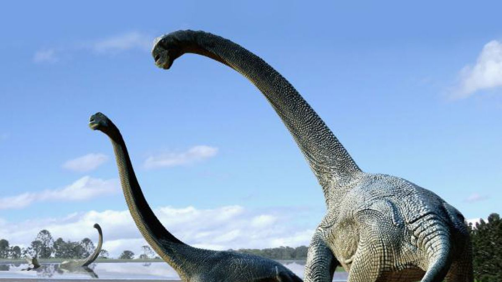

Los dinosaurios de cuello largo eran grandes reptiles pertenecientes al grupo de los Saurópsidos, el cual también incluye a los reptiles actuales y a las aves. Estos surgieron en el Carbonífero, con la aparición del huevo amniota, diferenciándose de los Sinápsidos (grupo del que derivan los mamíferos) en los caracteres de la región temporal del cráneo.
Aunque ha existido una gran variedad de especies de dinosaurios, los cuales se extinguieron aproximadamente hace 65 millones de años como consecuencia de grandes desastres naturales a finales del Cretácico, en este artículo de ExpertoAnimal nos centraremos en los dinosaurios de cuello largo, sus características y algunos ejemplos más conocidos

Los dinosaurios de cuello largo debían compartir características propias de los reptiles, como la condición de ectotermia, la presencia de un corazón tricameral, fuertes mandíbulas, extremidades generalmente acabadas en cinco dedos, costillas con esternón y ácido úrico como producto de excreción. No obstante, estas son algunas de las características que podían diferenciar a los dinosaurios de cuello largo de otros reptiles:
Grandes dimensiones corporales, pudiendo superar en la mayoría de ocasiones los 25 metros de largo y las 10 toneladas de peso.
Grandes colas y gruesas patas.
Una cabeza pequeña en proporción a su gran cuerpo.
Eran dinosaurios herbívoros.
Largos cuellos con los que llegaban a las ramas más altas de los árboles. Esto también le permitía ahorrar energía durante la búsqueda de alimento, pues al llegar a grandes distancias con su cuello, no tenían que desplazarse constantemente. Sin embargo, no todos alzaban el cuello para comer.
Dientes en forma de cuchara o espátula, adaptados a comer materia vegetal e inútiles para masticar el alimento.
Una práctica habitual era la ingestión de piedras para poder triturar las plantas.
Restos fósiles apuntan a que eran animales gregarios, es decir, que vivían en manadas.
Existen varias hipótesis sobre la estructura del corazón, pues siempre ha existido la duda de cómo podía este bombear la sangre a todas las partes de un cuerpo tan enorme. Entre ellas destaca la existencia de un corazón de grandes dimensiones o la existencia de varios pseudocorazones. Sin embargo, todo esto no ha podido ser comprobado por el registro fósil.